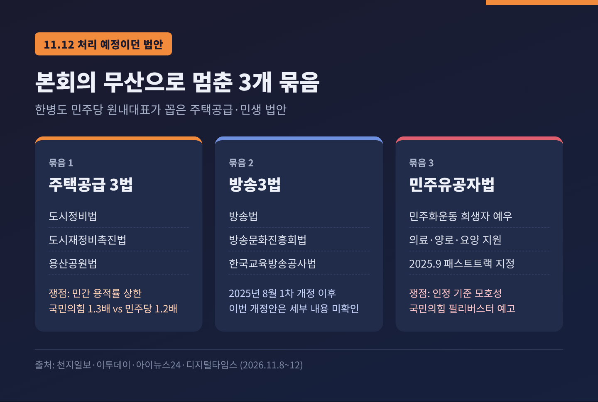
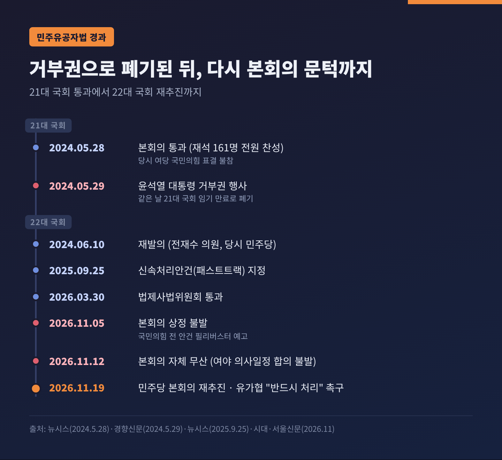
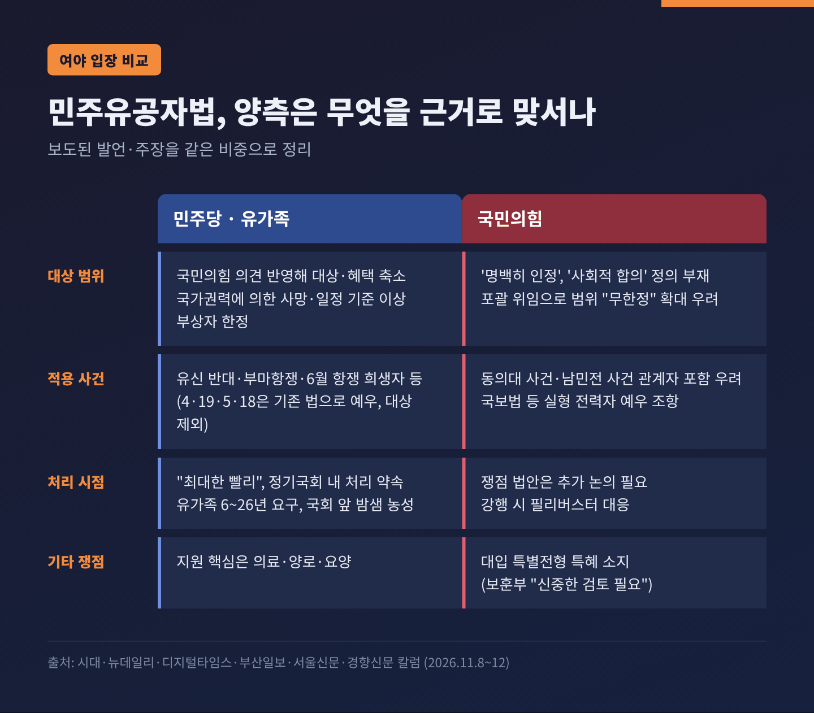
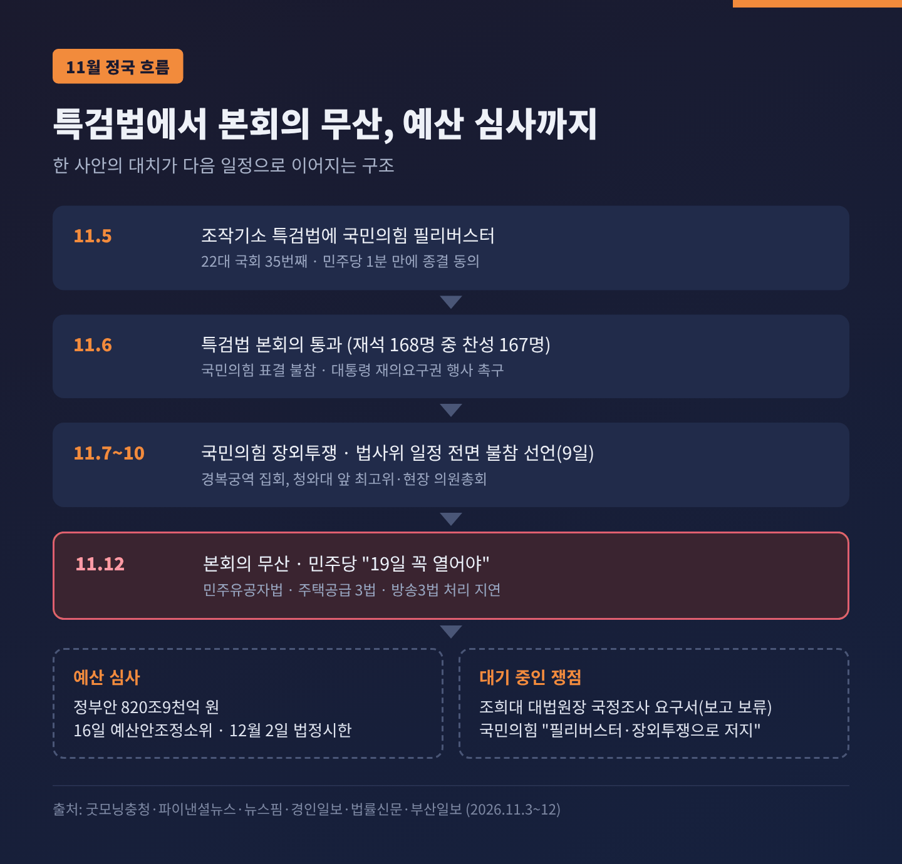
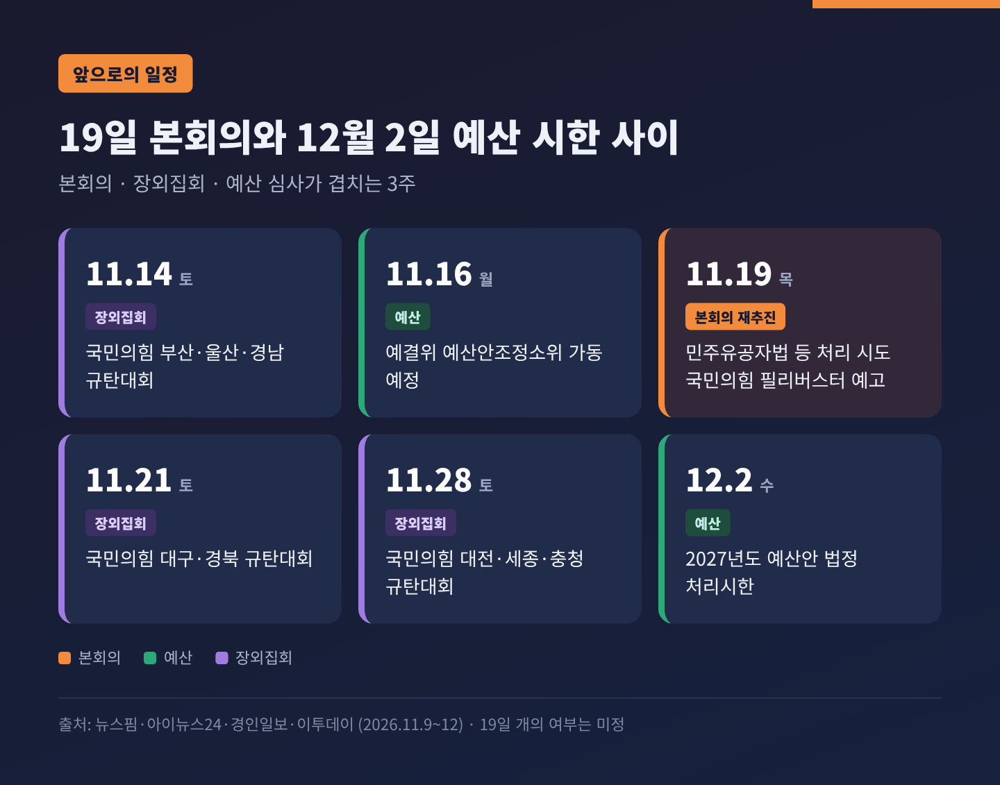

국회 본회의 무산, 민주유공자법 19일 처리 두고 여야가 맞선 이유
이번 글에서는 11월 12일 열릴 예정이던 국회 본회의가 무산된 경위를 정리해 보겠습니다. 어떤 법안이 멈춰 섰는지, 여야가 각각 무엇을 근거로 맞서는지, 그리고 19일 이후 무엇을 지켜봐야 하는지까지 차례로 짚습니다.
세 줄 요약
- 더불어민주당이 추진한 12일 본회의가 여야 의사일정 합의 불발로 열리지 못했습니다. 민주당은 국민의힘의 필리버스터·장외투쟁을 원인으로 들며 19일 개최를 요구하고 있습니다.
- 멈춘 법안은 민주유공자법, 도시정비법 등 주택공급 3법, 방송3법입니다. 국민의힘은 "쟁점 법안은 더 논의가 필요하다"며 강행 시 필리버스터를 예고했습니다.
- 민주유공자법은 2024년 대통령 거부권으로 한 차례 폐기된 법입니다. 유가족들은 국회 앞 밤샘 농성을 하며 "19일 반드시 처리"를 요구하고 있습니다.
■ 12일 본회의, 왜 열리지 못했나
출발점은 하루 전입니다. 11일 한병도 민주당 원내대표와 천준호 원내운영수석부대표가 조정식 국회의장을 찾아 12일 개의를 요청했습니다. 조 의장은 국민의힘과 추가 협의를 하라고 주문한 것으로 전해졌습니다. 결국 여야 의사일정 합의가 이뤄지지 않았고, 12일 본회의는 열리지 않았습니다.
김성회 민주당 원내대변인은 이를 "사실상 무산"이라고 표현했습니다. 국회의장실은 "여야 입장과 상황을 지켜보는 중"이라는 입장을 냈습니다.
이날 처리하려던 법안은 크게 세 묶음입니다.
- 주택공급활성화 3법: 도시정비법, 도시재정비촉진법, 용산공원법
- 방송3법: 방송법, 방송문화진흥회법, 한국교육방송공사법 개정안
- 민주유공자법: 민주화운동 희생자 예우법

법안마다 갈등의 결은 다릅니다. 도시정비법은 공공 재개발 시행자의 용적률을 최대 130%까지 올리는 것이 골자입니다. 민간 사업의 용적률 법적 상한을 두고는 국민의힘이 1.3배, 민주당이 1.2배를 주장하며 숫자 차이가 남아 있습니다. 방송3법은 2025년 8월 한 차례 개정이 마무리된 법인데, 이번에 올라온 개정안의 구체 내용은 공개 보도로 확인되지 않았습니다. 가장 첨예한 것은 민주유공자법입니다.
■ 왜 중요한가 — 정기국회 시계가 얼마 남지 않았다
이번 무산이 단순한 하루 연기로 끝나지 않는 이유는 일정에 있습니다. 한병도 원내대표는 "정기국회가 한 달도 남지 않았다"고 말했습니다. 같은 기간 2027년도 예산안 심사도 함께 진행됩니다.
정부 예산안은 820조9,000억 원으로 역대 최대 규모입니다. 법정 처리시한은 12월 2일입니다. 예산결산특별위원회는 11월 9~12일 부처별 심사를 마치고 16일부터 예산안조정소위원회를 가동할 예정입니다.
본회의가 한 번 밀릴 때마다 남은 본회의 날짜에 법안과 예산이 몰립니다. 필리버스터가 끼면 안건 하나에 최소 하루가 걸립니다. 국회법상 무제한토론은 종결 동의 후 24시간이 지나야 표결로 끝낼 수 있고, 재적의원 5분의 3 이상이 찬성해야 하기 때문입니다. 결국 본회의 하루를 잃는 일은 연말 국회 전체의 처리 용량을 줄이는 일과 같습니다.
■ 민주유공자법은 어떤 법인가
정식 이름은 「민주유공자 예우에 관한 법률안」입니다. 1964년 3월 24일 이후 반민주적 권위주의 통치에 항거하다 사망하거나 행방불명되거나 다친 사람, 그리고 그 유족·가족을 예우하는 내용입니다. 지원의 핵심은 의료·양로·요양입니다.
4·19혁명과 5·18민주화운동 관련자는 이미 별도 법으로 예우를 받고 있어 이 법의 대상이 아닙니다. 보도에 따르면 유신 반대 운동, 부마항쟁, 6월 민주항쟁 희생자 등이 주로 해당될 것으로 보입니다.
대상 규모는 소스마다 다르게 나옵니다. 권오을 국가보훈부 장관은 지난 3월 법사위에서 635명이라고 밝혔습니다. 민주화보상법이나 부마항쟁보상법으로 인정된 사망자·행방불명자와 장해등급을 받은 부상자를 합한 숫자입니다. 반면 뉴데일리는 국회 비용추계서를 분석해 본인 926명, 유가족 3,611명 등 4,537명을 보훈부 예상치로 전했습니다. 5년간 추가 재정은 약 101억7,900만 원으로 추산됐습니다. 두 수치는 집계 기준이 달라 보이며, 정확한 대응 관계는 확인되지 않았습니다.
■ 한 번 폐기된 법 — 거부권에서 패스트트랙까지
이 법에는 이미 한 번의 좌절이 있었습니다.
2024년 5월 28일, 21대 국회 마지막 본회의에서 민주유공자법은 재석 161명 전원 찬성으로 통과했습니다. 당시 여당이던 국민의힘은 표결에 불참했습니다. 추경호 당시 원내대표는 법적 검토, 사회적 논의, 여야 합의가 없다며 '3무 법안'이라 부르고 재의요구를 건의했습니다. 윤석열 대통령은 다음 날인 5월 29일 거부권을 행사했고, 같은 날 21대 국회 임기가 끝나면서 법안은 폐기됐습니다.
22대 국회 들어 2024년 6월 10일 전재수 의원(당시 민주당, 현 부산시장)이 다시 발의했습니다. 2025년 9월 25일 신속처리안건(패스트트랙)으로 지정됐고, 2026년 3월 30일 법제사법위원회를 통과했습니다. 그리고 11월 5일 본회의 상정이 예상됐지만, 국민의힘이 전 안건 필리버스터를 예고하자 상정되지 않았습니다.

예전에는 여당과 대통령의 거부권이 이 법의 벽이었습니다. 지금은 여당이 된 민주당이 처리를 서두르고, 야당이 된 국민의힘이 필리버스터로 맞서는 구도입니다. 여야의 자리가 바뀌었을 뿐, 법을 둘러싼 대립 축은 2년 전과 크게 달라지지 않았습니다.
■ 여야는 무엇을 근거로 맞서나
양측의 논리를 같은 무게로 정리해 보겠습니다.
민주당과 유가족의 입장
민주당은 국민의힘 의견을 반영해 적용 대상과 지원 혜택을 상당 부분 줄였다고 설명합니다. 서영교 의원은 국가권력에 의해 사망했거나 일정 기준 이상의 부상·장애를 입은 사람만 해당된다고 말했습니다. 한병도 원내대표는 당내에 법 통과에 대한 이견이 없다고 강조했습니다.
유가족의 시간은 더 깁니다. 경향신문 박래군 칼럼에 따르면 유가족들은 가족별로 6년에서 26년까지 법 제정을 요구해 왔습니다. 이들은 11월 9일 밤부터 국회 본관 앞 밤샘 농성에 들어갔습니다. 12일 김민석 민주당 대표가 농성장을 찾자 전국민족민주유가족협의회(유가협) 회원들은 "19일은 세상이 두 쪽 나도 꼭 만들라"고 요구했습니다. 김 대표는 "날짜도 딱 잡아 놓고 했는데 (합의가) 도저히 안 된다"며 정기국회 내 처리를 다시 약속했습니다.
국민의힘의 입장
국민의힘은 심사 기준의 모호함을 가장 큰 문제로 꼽습니다. 법안은 '명백히 인정'과 '사회적 합의'를 요건으로 두지만, 그 정의는 대통령령과 보훈부 장관 판단에 맡깁니다. 나경원 의원은 지난 3월 법사위에서 포괄 위임 때문에 인정 범위가 "무한정으로 확정될 수 있다"고 지적했습니다. 윤상현 의원은 공헌의 법적 기준이 명확해야 논란을 피할 수 있다고 했습니다.
구체적 사례도 듭니다. 1989년 동의대 사건(학내 시위 중 방화로 경찰관 사망), 남민전 사건 관계자까지 유공자로 인정될 수 있다는 우려입니다. 국가보안법 위반 등으로 실형을 받았더라도 형 집행 종료 후 3년이 지나고 '뉘우친 정도가 현저하다'고 인정되면 예우할 수 있는 조항도 문제 삼습니다. 보훈부도 국회 검토보고서에서 대입 특별전형과 관련해 "특혜 소지가 있어 신중한 검토가 필요하다"는 의견을 낸 것으로 보도됐습니다. 국민의힘 수석대변인은 의원총회에서 이 법에 필리버스터로 대응하기로 했다고 밝혔습니다.

한 가지는 짚어 둘 필요가 있습니다. 12일 무산의 책임이 국민의힘에 있다는 것은 민주당의 주장입니다. 이날 국민의힘의 공식 반박 논평은 확인되지 않았습니다. 다만 국민의힘은 그동안 "쟁점 법안은 더 논의가 필요하다"는 입장을 일관되게 밝혀 왔습니다.
■ 특검법·장외투쟁·국정조사 — 본회의를 둘러싼 정국
본회의 무산은 최근 정국 흐름과 떼어 놓고 보기 어렵습니다.
11월 5일 본회의에서 국민의힘은 '윤석열 정치검찰 조작기소 특검법'에 필리버스터를 신청했습니다. 22대 국회 들어 35번째 필리버스터였습니다. 민주당은 1분 만에 종결 동의로 맞섰고, 특검법은 6일 재석 168명 중 찬성 167명으로 통과됐습니다. 국민의힘은 표결에 참여하지 않았습니다.
이후 국민의힘은 국회 밖으로 나갔습니다. 7일 경복궁역 앞 집회, 9~10일 청와대 앞 최고위원회의와 현장 의원총회가 이어졌습니다. 14일 부산·울산·경남, 21일 대구·경북, 28일 대전·세종·충청에서 권역별 규탄대회도 예고했습니다. 9일에는 국민의힘 법사위원들이 법사위 일정 전면 불참을 선언했습니다.
국민의힘은 특검을 민주당이 추천하고 대통령이 임명할 수 있는 구조가 이해충돌이라고 주장합니다. 대통령에게 재의요구권 행사를 촉구하고 위헌법률심판 제청도 검토하고 있습니다. 민주당은 공소취소 조항과 이첩 요구권을 삭제했다며 반박하고, 장외투쟁을 "무책임한 정치 투쟁"이라 비판합니다.
국정조사도 변수입니다. 민주당은 조희대 대법원장 국정조사 요구서를 5일 본회의에 보고할 계획이었지만, 당내 의견 수렴을 이유로 보류했습니다. 국민의힘은 국정조사가 추진되면 이 역시 필리버스터와 장외투쟁으로 막겠다는 입장입니다.

국민의힘 내부에서도 온도 차는 있습니다. 일부 의원들은 장외투쟁이 "보여주기"에 그칠 수 있고, 예산 정국에서 상임위를 비우면 여론이 나빠질 수 있다고 우려했습니다. 장동혁 대표는 "정치생명을 걸고 함께 싸울 생각이 없다면 가벼운 입을 다물라"며 투쟁 기조를 유지했습니다. 예산 심사 보이콧은 아직 확정하지 않았습니다.
■ 예산안 심사와는 어떻게 맞물리나
예산 쟁점도 가볍지 않습니다. 가장 큰 다툼은 162조 원 규모로 신설하려는 미래대응기금입니다. 국민의힘은 이를 "2028년 총선용 사금고"라 비판하며 반대하고, 27조 원 규모 사업을 '불요불급'하다며 감액을 요구합니다. 민주당은 정부안을 바탕으로 민생·지역 예산 증액을 검토하고 있습니다.
민주당은 국민의힘이 예산소위 연기 등으로 심사를 막고 있다고 주장합니다. 국민의힘은 예산 심사와 특검법 대응을 연계할 가능성은 열어 두되 보이콧은 거론하지 않았다는 입장입니다.
여기서부터는 해석입니다. 입법 대치가 길어질수록 여야가 예산 협상에서 주고받을 카드도 함께 쌓입니다. 본회의 일정 협상이 예산 협상과 사실상 한 테이블에 올라갈 수 있다는 뜻입니다.
■ 19일 이후, 무엇을 지켜봐야 하나
민주당은 19일 본회의 개의를 의장에게 다시 요청할 계획입니다. 여기서 갈림길은 세 가지입니다.
- 의장의 개의 결정: 조정식 의장은 12일에도 여야 추가 협의를 요구했습니다. 19일에도 합의를 기다릴지, 개의를 결단할지가 첫 관문입니다.
- 필리버스터 대응: 민주유공자법이 상정되면 국민의힘 필리버스터, 24시간 뒤 종결 표결, 이후 법안 표결 순서가 예상됩니다. 법안 수만큼 날짜가 소요됩니다.
- 합의 처리 가능성: 주택공급 3법은 용적률 수치처럼 조정 여지가 보이는 쟁점이 있습니다. 반면 민주유공자법은 이견이 좁혀지지 않아 필리버스터 대결이 재연될 수 있다는 전망이 나옵니다.
같은 기간 장외 일정도 이어집니다. 14·21·28일 권역별 규탄대회, 16일 예산안조정소위 가동, 그리고 12월 2일 예산 법정시한이 차례로 다가옵니다.

정리하면 이렇습니다. 12일 본회의 무산은 특검법 이후 굳어진 여야 대치가 입법 일정으로 번진 결과로 읽힙니다. 민주당은 "민생 법안을 더 미룰 수 없다"고 하고, 국민의힘은 "쟁점 법안은 더 논의해야 한다"고 합니다. 두 주장 모두 나름의 근거가 있습니다.
다만 그 사이에서 가장 오래 기다린 사람들이 있다는 사실은 분명합니다. 국회 앞에서 밤을 지새우는 80대 유가족들입니다. 법의 기준을 더 다듬어야 한다는 지적도, 더는 미룰 수 없다는 호소도 결국 같은 질문으로 모입니다.
— 기다림과 검증 사이의 균형을 국회가 어떻게 찾느냐입니다.
19일 본회의가 열릴지 묻는다면, 지금으로서는 의장의 결단과 여야의 막판 협상에 달려 있다고 답할 수밖에 없겠습니다.
출처
- 서울신문, 「본회의 무산에 또 미뤄진 민주유공자법…유가협 "19일 세상 두 쪽 나도 처리를"」(2026.11.12) https://www.seoul.co.kr/news/politics/2026/11/12/20261112500283
- 이투데이, 「민주, 본회의 무산에 "국힘 필버·장외투쟁 몰두…19일 꼭 열어야"」(2026.11.12) https://www.etoday.co.kr/news/view/2647297
- 천지일보, 「민주당, 본회의 불발에 "국힘 민생 외면"… 19일 재추진」(2026.11.12) https://www.newscj.com/news/articleView.html?idxno=3448102
- 아이뉴스24, 「국회 본회의 '불발'…민주 "국힘, 민생 도움 안 돼"」(2026.11.12) https://m.inews24.com/v/2025458
- 뉴스1, 「조 의장·與 투톱, '민주유공자법' 제정 촉구 유가협 면담(종합)」(2026.11.12) https://www.news1.kr/politics/assembly/6352199
- 뉴데일리, 「대입 특혜 주고 국보법 전과자도 예우 … 與 '민주유공자법' 처리 속도전」(2026.11.12) https://www.newdaily.co.kr/site/data/html/2026/11/12/2026111200303.html
- 시대, 「"빨리" "필버"…민주유공자법 '모호한 기준' 논란 여전」(2026.11.11) https://www.sidae.com/article/2026111114360955020
- 경향신문 박래군 칼럼, 「80대 유가족들이 밤샘 농성을 한다」(2026.11.09) https://www.khan.co.kr/article/202611092010005/
- 디지털타임스, 「특검 이어 민주유공자법 대치…예산 국회 '첩첩산중'」(2026.11.08) https://www.dt.co.kr/article/12093775
- 부산일보, 「'필버' 지속에 예산 공방까지…연말 국회 '첩첩산중'」(2026.11.08) https://www.busan.com/view/busan/view.php?code=2026110816185477917
- 굿모닝충청, 「11월 국회 본회의, 필리버스터 '개막'」(2026.11.05) https://www.goodmorningcc.com/news/articleView.html?idxno=455251
- 파이낸셜뉴스, 「조작기소 특검법, 與주도로 국회 통과…野 장외투쟁 본격화」(2026.11.06) https://www.fnnews.com/news/202611061802265727
- 뉴스핌, 「국민의힘, '조작기소 특검 반대' 전국 장외투쟁 예고…당내 회의론도」(2026.11.11) https://www.newspim.com/news/view/20261111001241
- 경인일보, 「'특검법 장외전' 번진 821조 정부 예산안 심사」(2026.11.09) https://www.kyeongin.com/article/1774389
- 법률신문, 「與 '조희대 대법원장 국정조사' 요구서 11월 5일 본회의 보고 보류」(2026.11.03) https://www.lawtimes.co.kr/news/articleView.html?idxno=228827
- 뉴시스, 「민주유공자법 등 4개 법안 야 단독 처리…여 거부권 예고(종합)」(2024.05.28) https://www.newsis.com/view/NISX20240528_0002752059
- 경향신문, 윤석열 대통령 거부권 행사 보도(2024.05.29) https://www.khan.co.kr/article/202405291736011
- 뉴시스, 「'공공기관 운영법' 등 4건 국회 패스트트랙 지정」(2025.09.25) https://www.newsis.com/view/NISX20250925_0003344316
#국회본회의무산 #민주유공자법 #유가협 #필리버스터 #조작기소특검법 #장외투쟁 #예산안법정시한 #정기국회